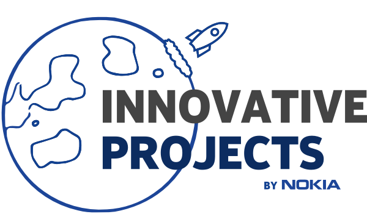

<app-navbar class="navbar" (changedTheme)="changedTheme($event)"></app-navbar>
<mat-sidenav-container [class.dark-theme]="darkTheme" [ngClass]="{'content-sides-light': !darkTheme, 'content-sides-dark': darkTheme}">
	<mat-sidenav class="sidenav-menu" #sidenav (keydown.escape)="sidenav.close()">
	</mat-sidenav>
	<mat-sidenav-content>
		<div class="site" [class.dark-theme]="darkTheme" [ngClass]="{'main-content-light': !darkTheme, 'main-content-dark': darkTheme}">
			<mat-card class="content">
				<router-outlet></router-outlet>
			</mat-card>
			<div class="footer">
				<div>Nokia Library v1.0</div>
				<div>2018-2019</div>
			</div>
		</div>

		<a href="https://github.com/nokia-wroclaw/innovativeproject-nokia-library" target="_blank">
			
			
		</a>
	</mat-sidenav-content>
</mat-sidenav-container>
